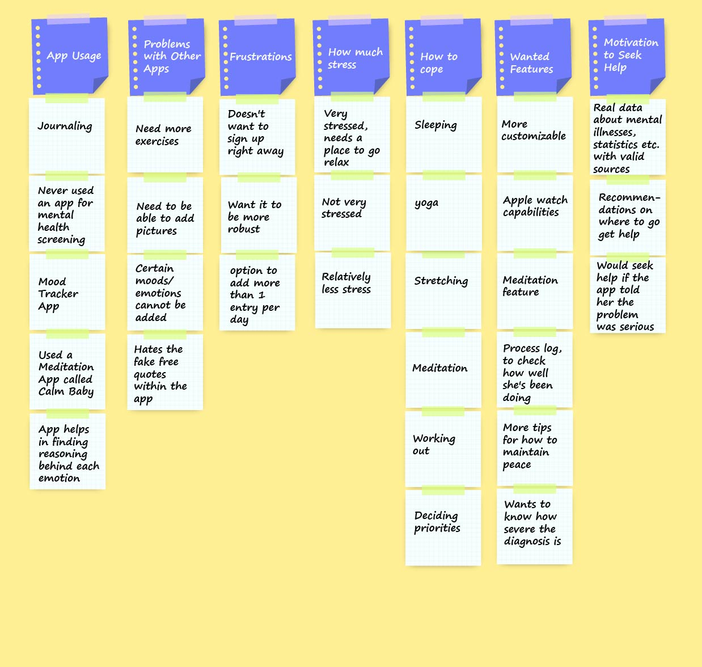
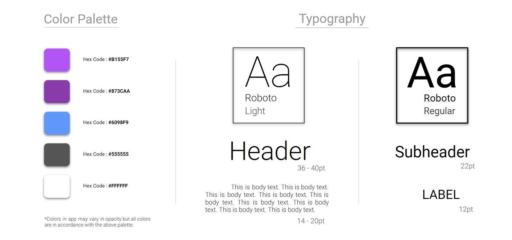

Silver Lining
For Healthier & Happier Life
Silver Lining
For Healthier & Happier Life
GOALS
To design a product aimed to solve a problem in the health and wellness industry. Our team settled on building a mental health screening app geared towards students looking to address their mental health.
ROLE
User Research, Information Architect, UX/UI Design, Visual Design, Prototyping, Testing
TARGET AUDIENCE
College Students
18 yrs - 24 yrs
OVERVIEW
More people are suffering from common mental health issues all over the world than ever before. People often don’t get the mental health services they need because they don’t know where to start. How can an individual feeling overwhelming sadness, missing out on opportunities and happiness because of fears and worries or bothered by a traumatic life event take a quick assessment/screening to determine whether he/she is experiencing symptoms of a mental health condition?
Currently, there is no app available which allow users to screen for mental health issues like depression, anxiety, post-traumatic stress, and alcohol problems; help guide their decision to contact a mental health professional; provide suggestions like physical workout to maintain healthy physical and mental well-being; track their mood and sleep on daily basis. To address these problems, we prototyped a mobile application called ‘Silver Lining’.
RESEARCH
Our team started out with a direction in mind when we began our initial interviews. We were going to gather general health and wellness information from our interview participants and gauge whether or not they have actively sought any help for their mental health. While our initial research did point to the fact that the students we spoke with were in fact interested in taking advantage of potential health and wellness information available through google searches, through our affinity mapping of our ten interviews, we noticed other themes that were more prevalent and important to the audience that we spoke with. Our initial interviews pointed to the fact that the majority of the people we spoke with considered themselves to be health-conscious and defined wellness by including both physical and mental health. They are able to address their physical health through eating healthfully and exercising, but the interviewees identified either a lack of time or knowledge as barriers to improving their mental health.
IDEATION & SKETCHING
Based on our Contextual Analysis, we carried out ideation and sketching activities. With the help of sketching we explored, refined and communicated our design ideas. It saved us a lot of time, helped us think clearer, and find better solutions to problems.
DESIGN
As part of the learning process, each team member developed their own concept to design and test with users. I decided focus on the individuals who are interested in their mental well-being, but don’t necessarily know what to do about it. The concept was a meditation, mindfulness and mood tracking app providing short, easy to digest exercises to learn about how to incorporate meditation and mindfulness into the user’s life.
The concept also offered the option of messaging with an expert in the area of mindfulness and meditation to encourage further exploration and provide guidance when a user was feeling like they wanted personalized instruction. After each team member had low-fidelity prototype designed, we conducted a round of user tests to find out what was working and which aspects were resonating with the concept of mental health and meditation. What we found was that our designs all tested very closely, but there were stand-out features from each app.
Color Palette:
The color palette for a mental health-related application must be pleasant, trustworthy, clean, and readable. Therefore, I decided to use a refreashing color palette, with the typography in contrasting colors. The application needs to tell a story to the user, which was achieved by using images that show the emotions that the user can experience.
High Fidelity Screens:
Moving forward we decided to combine those aspects and features into our final User Interface for Silver Lining.


WHAT I LEARNED
This was my first design project as a UX/UI designer. I learned the value of working within agile methodologies for successful project management and saw it push our creativity further than we could have ever expected. I also learned that the more extensive and thorough our research, the stronger our design framework was, which helped us created the most effective end product. Strong communication and a willingness to learn from my teammate’s strengths proved to be an invaluable approach to solving our product’s design problems.